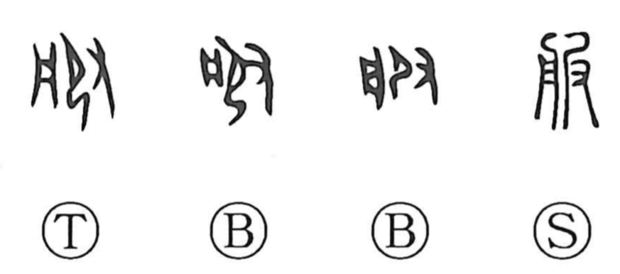

服

Kun: | On: fuku
clothing ・ to submit ・ to obey ・ to carry out ・ to serve ・ to use
Explanation
服 is a phono-semantic character. The phonetic 艮, which provides the sound value, depicts a kneeling figure being pressed down from behind by a hand, an image of bringing someone to submission. The other element, written as 月 here but standing for the component that underlies 盤, points to the ritual tray used in formal ceremonies. Together they express the act of conducting a prescribed rite before the vessel—most notably the rite that follows surrender. From the completion of such a ceremony arise the obligations of subjection (服属) and the performance of attendant service (服事), yielding core senses of “to submit, obey, comply,” and by extension “to carry out, serve, use,” alongside the later noun sense of “clothing.”